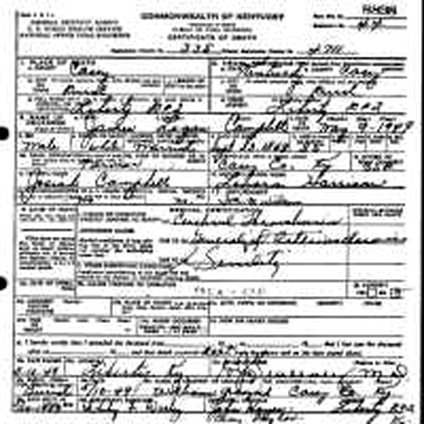
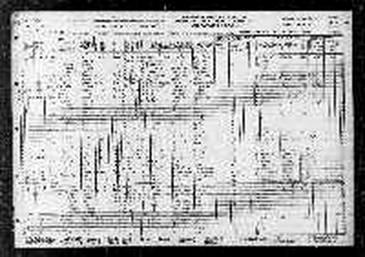
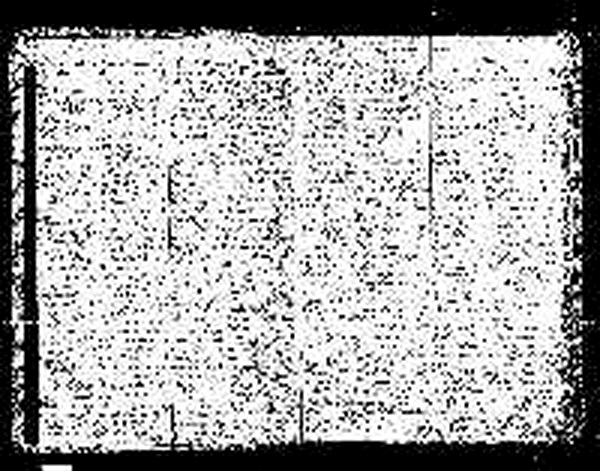

James Logan Campbell
23 September 1864 – 9 May 1949
Quick Facts
Immediate Family
Spouses
- Maude Allen Combs (married 11 February 1891)
Children
- Iva M. Campbell (1892–1958)
- Della Campbell (1893–1941)
- Logan Ira Campbell (1897–1970)
- Franklin Filmore Campbell (1899–1920)
- Mary Etta Campbell (1902–1957)
- Nanie Bet Campbell (1905–1936)
- Edith Carrell Campbell (1908–1993)
- Nora Lizabeth Campbell (1911–2005)
- Joseph Campbell (1915–1915)
Siblings
- Lee Campbell
- John Campbell
- Matilda Campbell
- Josiah Campbell
- Nannie Settleo Campbell
Family Relationship Notes
The FamilySearch published profile identifies Josiah Lewis Campbell and Lenora Harrison as James’s parents, names Maude Allen Combs as his wife, and lists nine children. These are compiled-profile claims backed by source links that have not yet been directly reviewed in this pass. The family cards retain the names while the source limitations remain here.
FamilySearch reports eight siblings, but its public display exposes only five names; three additional names are hidden in the “+3 more” display and are not supplied here. Do not invent the missing names.
The birth year conflicts: FamilySearch gives 23 September 1864, while the memorial-attached death-record index text reportedly gives 23 September 1863. Keep both claims visible until the original records are examined. The cemetery location is based on a Find a Grave search result and the marker photo, not a directly reviewed cemetery register.
New Generation VIII profiles link the parents shown in the published FamilySearch profile. FamilySearch pages for James, Josiah, and Lenora repeat these relationships; they remain compiled-profile claims pending a direct parentage record. The separate WikiTree Josiah S Campbell profile gives a conflicting spouse, Leah Harrison, so that identity link is not treated as resolved.
On Family Tree Sites
Couple Folder
Open Gen VII couple folder: James Logan Campbell × Maude Allen Combs for records, photos, notes and stories.
Life Timeline
23 September 1864 · age 0
Reported born in Casey County, Kentucky; the attached death-record index gives 1863, so the birth year remains subject to record reconciliation
11 February 1891 · age 26
Married Maude Allen Combs in Liberty, Casey County, Kentucky
1930 · age 65–66
Reported in Dunnville, Casey County, Kentucky, in the FamilySearch-cited census entry
1940 · age 75–76
Reported in Cincinnati, Hamilton County, Ohio, in the FamilySearch-cited census entry
9 May 1949 · age 84–85
Died in Casey County, Kentucky, according to the FamilySearch profile; burial reported at Raney Cemetery
Life Story
James Logan Campbell was born in Casey County, Kentucky, in 1864, according to the FamilySearch compiled profile. He married Maude Allen Combs in Liberty on 11 February 1891. Their published family profiles place their home in Dunnville in 1930 and Cincinnati in 1940, and list nine children, including Logan Ira Campbell. James died in Casey County in 1949. These details are presented as supported compiled-tree information; the cited original marriage, census and death records still need direct inspection.
Photo Gallery







Sources and Evidence
- FamilySearch, James Logan Campbell, 27VG-TF8: published profile gives birth 23 September 1864 in Casey County, Kentucky; parents Josiah Lewis Campbell and Lenora Harrison; marriage to Maude Allen Combs on 11 February 1891 in Liberty; nine children; residences Dunnville in 1930 and Cincinnati in 1940; death 9 May 1949 in Casey County. The page lists 27 sources, including 1930 census, Kentucky marriage and Kentucky death records.
- Find a Grave search result for James Logan Campbell: one result with the matching dates at Raney Cemetery, Casey County, Kentucky. Search-result summary only; the memorial page/image was not directly reviewed.FamilySearch, Maude Allen Combs, LJJX-TQM: spouse/parent profile independently lists James and the same nine children.
- FamilySearch profile photo thumbnail: shared Campbell marker image associated with James and Maude’s profiles. This is a related marker image, not a primary identity record.
- Find a Grave, James Logan Campbell, photo page — cemetery-marker image and attached newspaper/death-record photographs, with contributor/date captions. User-contributed memorial and images; original records/clippings not inspected in this pass.
- Find a Grave, Nannie Bet Campbell Wethington, Memorial 18113071 — attached memorial transcript identifies her father as J. L. Campbell and mother as Maud Combs; family links name James Logan Campbell and Maud Allen Combs Campbell as parents. User-contributed memorial transcription, not an inspected birth certificate.
- Find a Grave memorial 18113071, Nannie Bet Campbell Wethington: memorial transcript names her parents as J. L. Campbell and Maud Combs. This supports, but does not alone document, the parent links.
- Josiah Lewis Campbell, FamilySearch profile LDYY-VM5 — profile or memorial evidence inspected for the parent links; compiled or contributor-maintained, not a substitute for an original parent-child record.
- Lenora Harrison, FamilySearch profile G4KM-3HT — profile or memorial evidence inspected for the parent links; compiled or contributor-maintained, not a substitute for an original parent-child record.

Research Notes and Open Questions
- Vital dates, marriage details, residence, and parent/child links are from FamilySearch published family profiles, which aggregate sources but are not themselves original records.
- The shared marker photograph is an image shown on both FamilySearch profiles. Its small thumbnail permits only limited reading; do not independently transcribe illegible dates or imply it proves the relationship by itself.
- Seek original Casey County marriage records, census schedules, death records and obituaries to document the family links and resolve name/date variants.
- Find a Grave memorial page and FamilySearch profile give James’s birth year as 1864, but the memorial-attached indexed death-record text says 23 Sep. 1863. The exact birth year remains a source conflict and should not be silently fixed.
- The memorial-attached 2013 Casey County News clipping for James is in the gallery; the clipping image remains externally served by Find a Grave and could not be downloaded locally (HTTP 403).
DNA
No DNA matches linked yet.
Family Notes
No separate family-notes link is listed.
Profile created 20 November 2026. Family links are supported by published FamilySearch profiles; original records remain to be inspected.